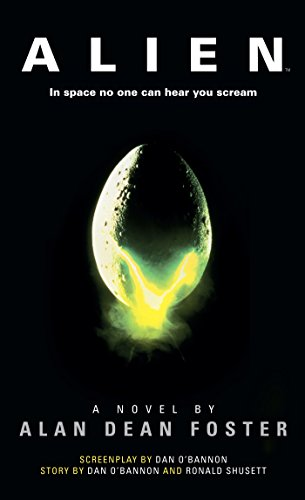
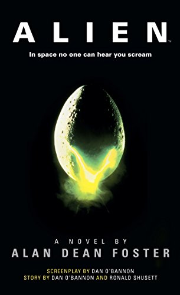
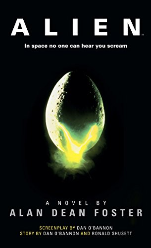

Resenhas
Home
Analises
Chat
Sair

O resgate do soldado Ryan (1998) - Steven Spielberg (nota 9.8)
Selecione uma analise
Analise de Ricardo (nota 6)
Nota para o filme/série
Registrar
Nota para a análise
Registrar


 
